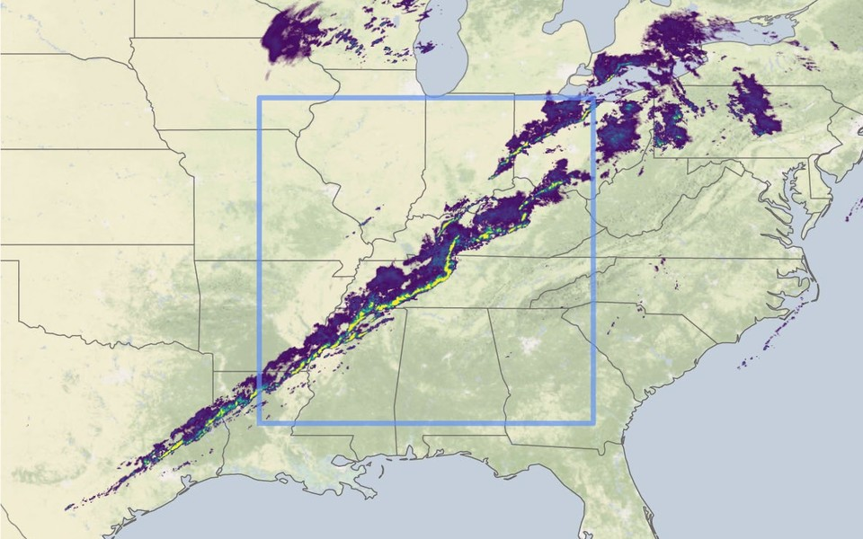
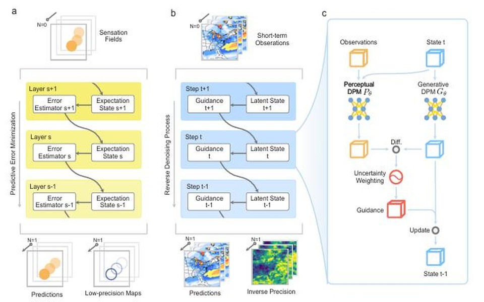
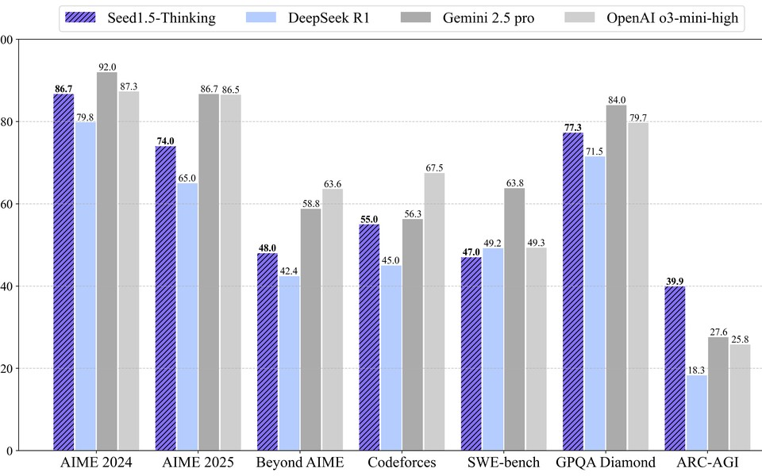
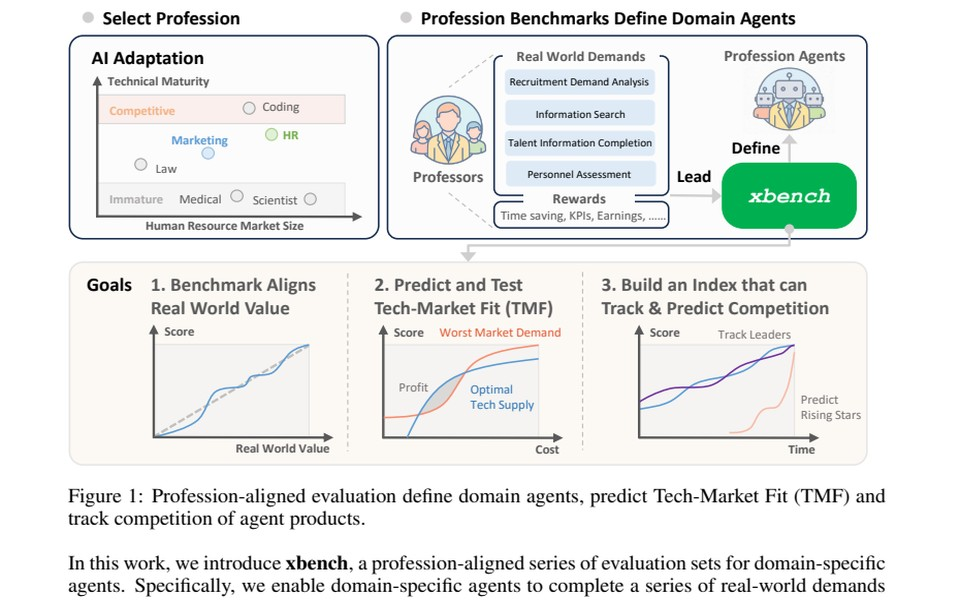

Nature · 2023
Skilful nowcasting of extreme precipitation with NowcastNet
A generative nowcasting system that combines physical-evolution priors with data-driven learning for large-area, short-term extreme precipitation prediction.
ByteDance
AI4Weather Video Generation Deep Learning LLM Scaling Laws
Machine Learning Lab, School of Software, Tsinghua University
Aug 2021 - Jun 2024
Department of Mathematical Sciences, Tsinghua University
Aug 2017 - Jun 2021

Nature · 2023
A generative nowcasting system that combines physical-evolution priors with data-driven learning for large-area, short-term extreme precipitation prediction.

ICML · 2024
Bridges predictive-coding principles with diffusion models to improve precision-aware attention and spatiotemporal forecasting performance.

arXiv · 2025
A reasoning model trained with reinforcement learning that strengthens think-before-answer behavior across math, coding, and tool-use benchmarks.

arXiv · 2025
Introduces a profession-aligned evaluation suite for measuring real-world productivity scaling and market readiness of AI agents.
arXiv:2601.06521
arXiv:2511.11238
Nature 619 (7970), 526-532